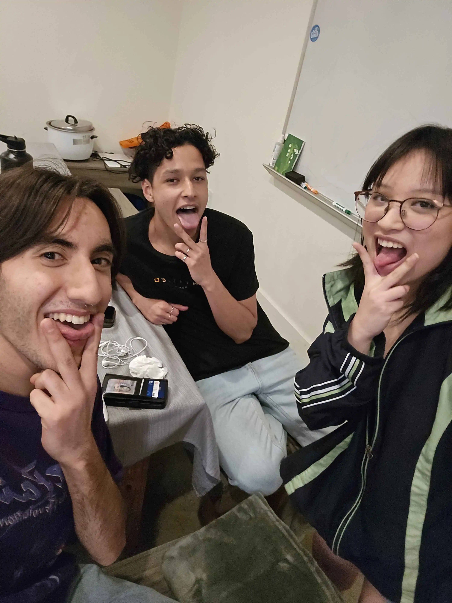

february 27th, 2025:
our first date
our first date

us sat down at the dinner table for hours, "doing" our homework together. little did i know, i would fall madly in love with the boy i thought was out of my league.